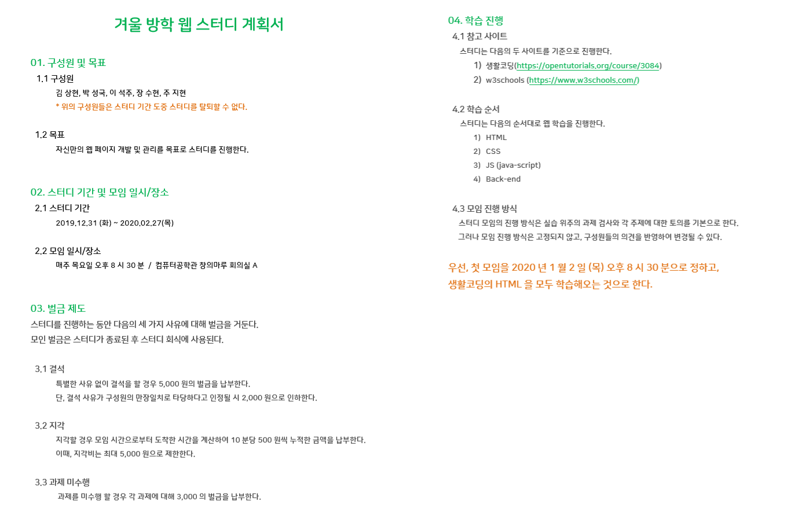

1. Intern of Culture Factory
2. Web Study 
웹에서는 이걸 배울거다!
- HTML
- CSS
- JavaScript
3. TOEIC Study
4. Algorithm Study
5. C++ Study
6. Exercise
what is h1~h6?
h1은 첫 번째 중요한 제목
h2은 두 번째 중요한 제목
h3은 세 번째 중요한 제목
h4은 네 번째 중요한 제목
h5은 다섯 번째 중요한 제목
h6은 여섯 번째 중요한 제목
p는 문단을 나타내는 tag이다.
여러 문단들 사이에 간격을 주어 문단들을 한 눈에 보게 한다는 점에서 장점이 있지만,
문단 간에 내가 원하는 만큼의 간격을 줄 수 없다는 단점이 있다.
그럴땐 br tag를 사용하여 해결할 수 있다. 원하는 new line 만큼 br를 삽입하면 된다.
추가적으로 css를 사용하면 자유자재로 조정이 가능하지만 일단 css는 배제한다.